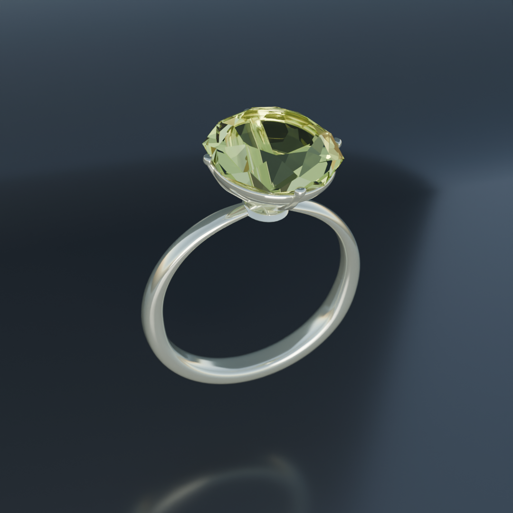
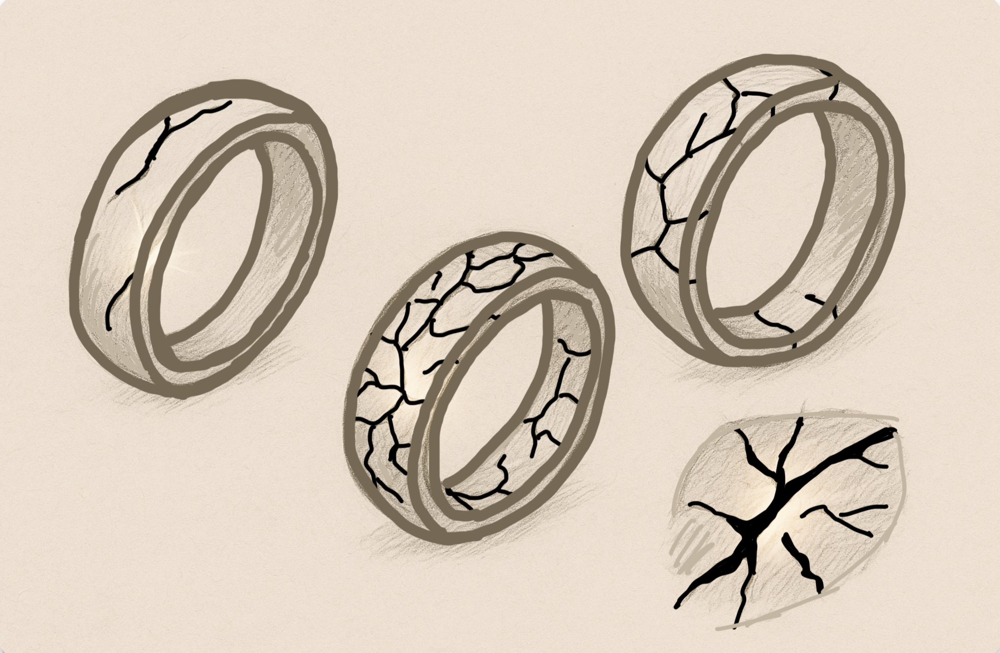
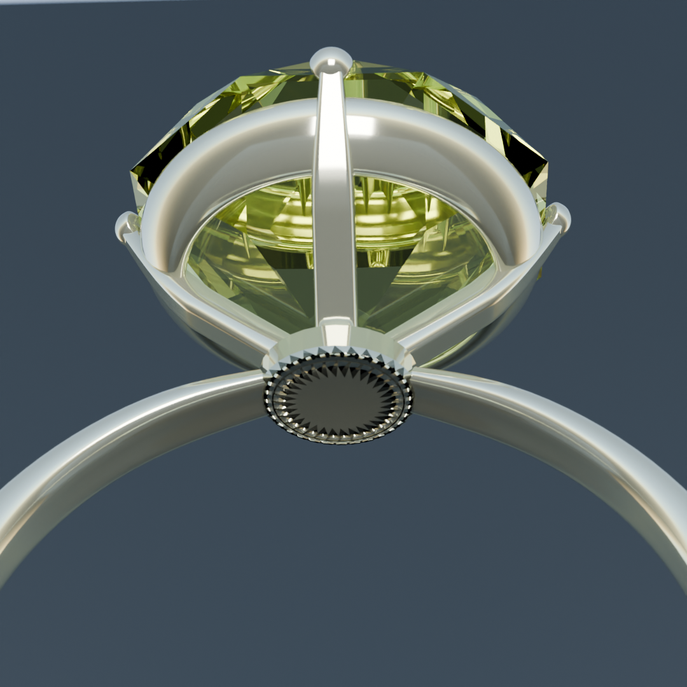
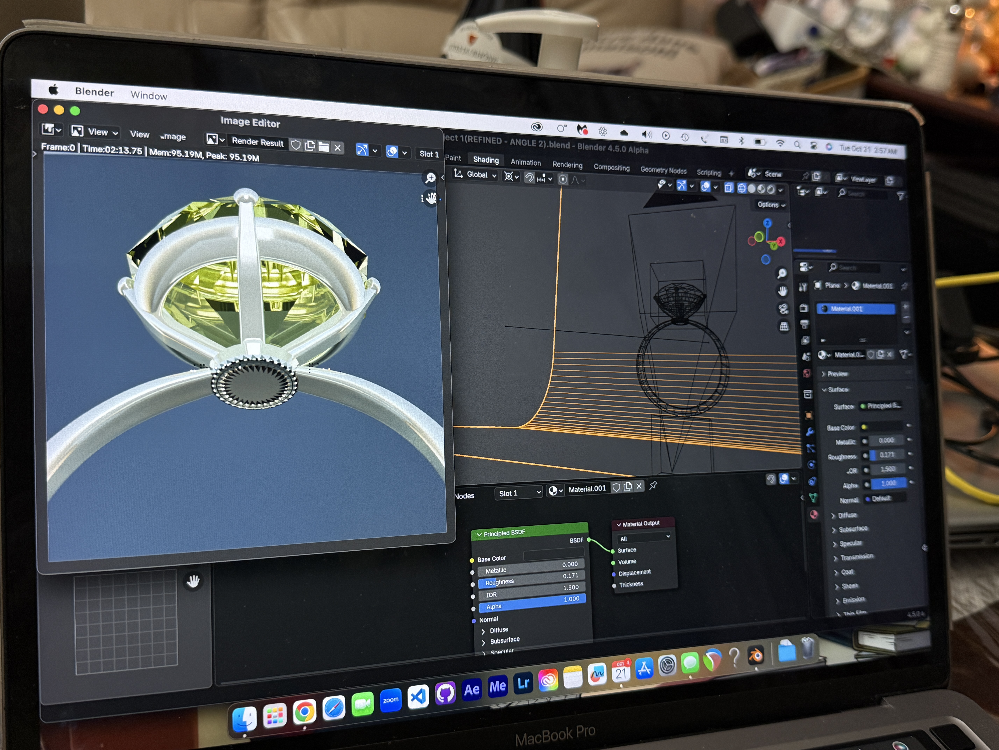
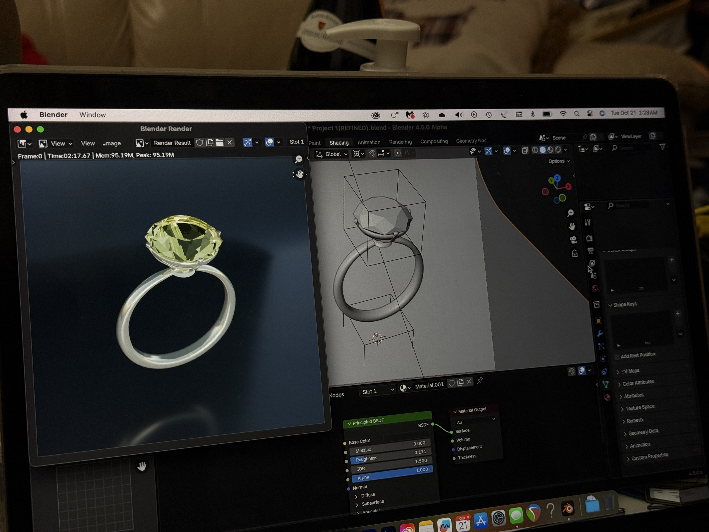

Surface Tensions — 3D Conceptual Object
A Blender 3D project exploring the delicate balance between beauty and fragility through a diamond ring. The ring is almost too polished, reflecting perfection, yet carries an underlying sense of vulnerability — like candy too perfect to resist. The project demonstrates high-fidelity hard-surface modeling, material shading, and conceptual storytelling through form.

The problem that needed solving.
The project aimed to explore the tension between perfection and imperfection through the form of a ring. This required creating a technical model with precise hard-surface topology and realistic PBR gold/silver materials, while also designing a conceptual version that cracks open to reveal a glowing iridescent inner core — capturing the ideas of resilience, hidden strength, and the beauty of objects shaped under pressure.
Hard-surface modeling a ring with clean topology required careful loop control — every extra edge affected subdivision curvature.
Achieving realistic gold/silver PBR appearance required precise calibration of metallic value, roughness, and IOR under varied HDRI lighting.
Crack geometry needed to feel structural and organic — not decorative — while revealing the inner core convincingly.
The iridescent inner core required combining emission shading with a spectral color ramp to simulate light emanating from within the fractures.


How it came together.
Base Modeling
Modeled the ring using low-poly hard-surface techniques, then refined with Subdivision Surface modifier for smooth curvature.
PBR Materials
Applied Principled BSDF gold/silver materials with metallic at 1.0, tuned roughness, and appropriate IOR to simulate realistic reflectance.
Conceptual Touch
Added subtle imperfections to suggest fragility while keeping an almost-perfect polish — capturing tension between flawlessness and delicacy.
Rendering
Rendered both models in Cycles with HDRI lighting — the clean ring and the cracked conceptual version as a diptych.


What it delivered.
Two complete renders: clean polished diamond ring + conceptual slightly fragile version
Subtle imperfections create the sense of fragility while maintaining perfection
Conceptual narrative of resilience and hidden strength communicated through material and form alone
Deep learning in Blender topology, PBR shading, boolean operations, and emission materials
What this project taught me.
Topology is permanent
Every edge loop decision in hard-surface modeling has downstream consequences — mistakes at the base mesh propagate through all subsequent steps.
Material design is physics
Understanding how metallic, roughness, and emission values interact with light makes material authoring intentional rather than intuitive.
Concept shapes craft
Knowing the emotional narrative (resilience, imperfection, hidden strength) upfront made every technical decision — crack placement, glow color, camera angle — more deliberate.